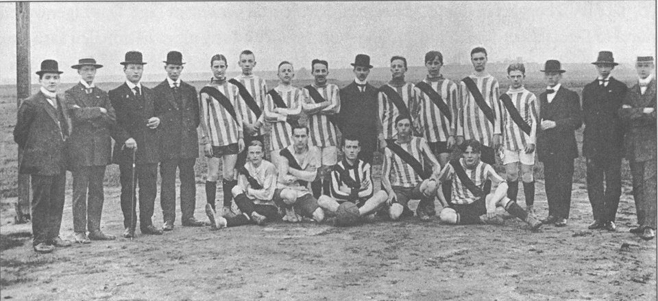
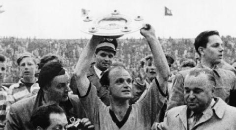
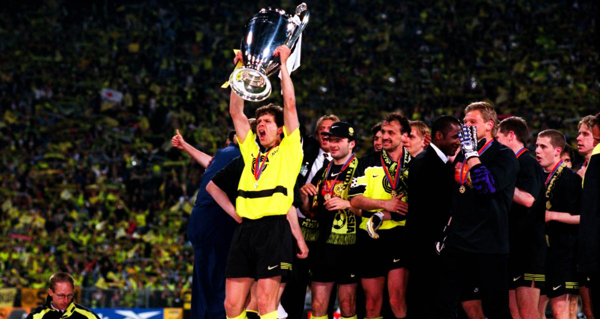
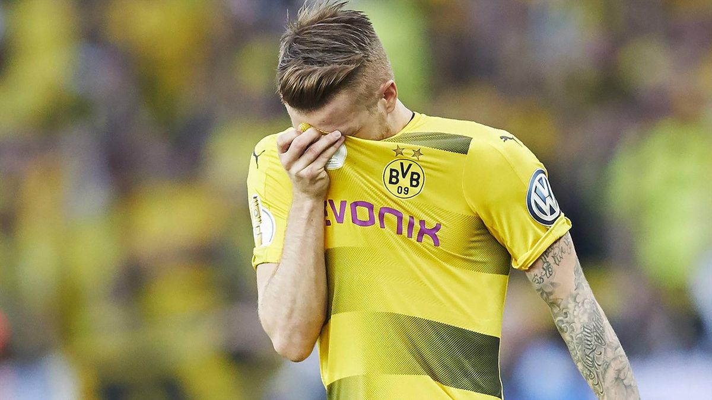
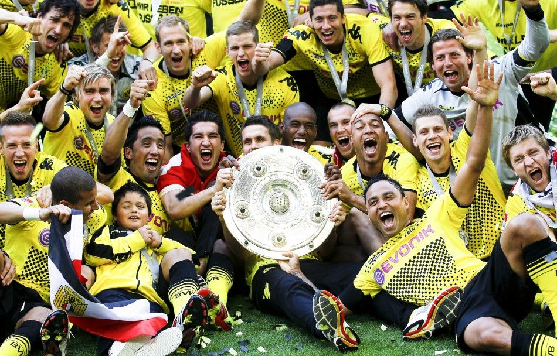

Fondé à la fin de l'année 1909, le Borussia Dortmund est l'un des plus grands clubs allemands. On doit sa création spontanée à un groupe de jeunes ouvriers des aciéries et des mines de Dortmund. Borussia, le nom latin de la Prusse, était aussi le nom de la bière locale très prisée par les fondateurs. Le terme a donc été choisi pour baptiser le club. Devenu une équipe phare dans les années '30, le BVB a dû repartir de zéro à la fin de la Seconde Guerre Mondiale.
À la lutte pour le titre pendant près de dix ans, le Borussia devient pour la première fois Champion d'Allemagne en 1956 puis réédite sa performance l'année suivante. De nouveau sacré en 1963, le club inaugure donc la formule moderne et professionnelle de la Bundesliga (un championnat à poule unique) en tant que tenant du titre en 1964. Cette même année le BVB dispute sa première demi-finale de Coupe des Champions mais s'incline face à l'Inter Milan. La victoire en Coupe d'Allemagne en 1956 qualifie le club pour la Coupe des Coupes qu'il remporte un an plus tard. Cette victoire de prestige lors des prolongations face à Liverpool fait du Borussia Dortmund le premier club allemand à remporter une compétition européenne.
La fin des années '80 marque réellement le retour au premier plan avec une victoire en Coupe d'Allemagne (1989). Petit à petit le Borussia retrouve les premiers rôles et la scène européenne. Ottmar Hitzfeld prend les rênes de l'équipe en 1991. S'ouvre alors une ère de succès et de réussite avec notamment une finale de Coupe de l'UEFA perdue face à la Juventus Turin. Sous l'impulsion des Sammer, Möller, Zorc et Chapuisat, le BVB reconquiert le titre de Champion d'Allemagne en 1995 avant de doubler la mise en 1996. Le BVB touche le Graal en 1997. Terrassant la Juventus en finale à Munich (3-1), le club écrit la plus belle page de son histoire et soulève la tant convoitée Ligue des Champions. Dans la foulée le club remportera même la Coupe Intercontinentale.
En 2004 le club ne parvient pas à se qualifier pour la Ligue des Champions et affiche un manque à gagner de plus de 15 millions d'euros. Entraîneur puis joueurs acceptent de réduire leurs salaires pour faire face aux difficultés financières, mais la saison est un échec cuisant : le Borussia ne sera pas européen. Les actions en bourse chutent de 80% et un plan de rigueur doit être mis en place. Nous sommes en 2005 et le Borussia Dortmund est endetté à hauteur de 200 millions d'euros…
La saison suivante sera celle de l'immense surprise. Le BVB débute l'année sur les chapeaux de roues et enchaîne les victoires. Si le parcours en Europa League reste anecdotique avec une élimination dès la phase de groupes, le Borussia est intraitable en Bundesliga. A l'automne, le club prend la tête du championnat et ne la lâchera plus, se permettant le luxe de s'imposer à Munich pour la première fois depuis vingt ans ! En mai 2011, la folie s'empare de Dortmund, qui vient de décrocher son septième titre de champion d'Allemagne. On s'attend alors à une année difficile pour digérer une telle réussite. Cela se confirme lorsque le BVB pointe dans la seconde partie du classement après six journées. La campagne en Ligue des Champions est un échec retentissant, avec une élimination en phase de groupes, avec un seul succès en six rencontres. Pourtant, Klopp et ses hommes redressent la tête et aligneront 26 matchs consécutifs sans défaite jusqu'à la fin du championnat : nouveau record ! Un tel parcours permet au club de conserver son titre contre toute attente et de s'installer un peu plus encore aux commandes du football allemand. Pour couronner le tout, le club s'offre le premier doublé de son histoire en remportant la coupe d'Allemagne, terrassant une fois encore le Bayern Munich en finale à Berlin (5-2).
